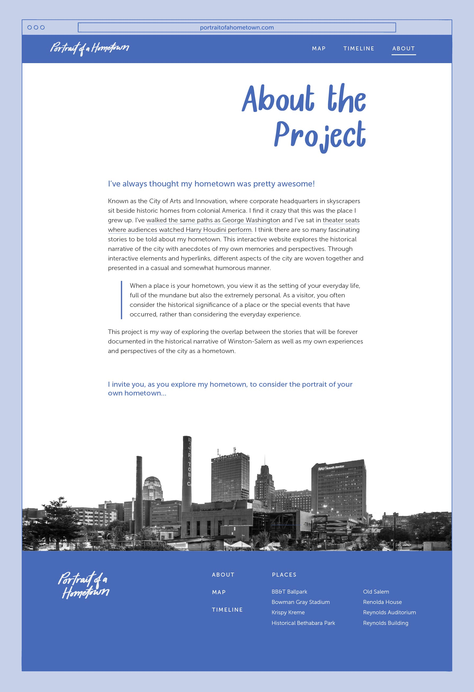
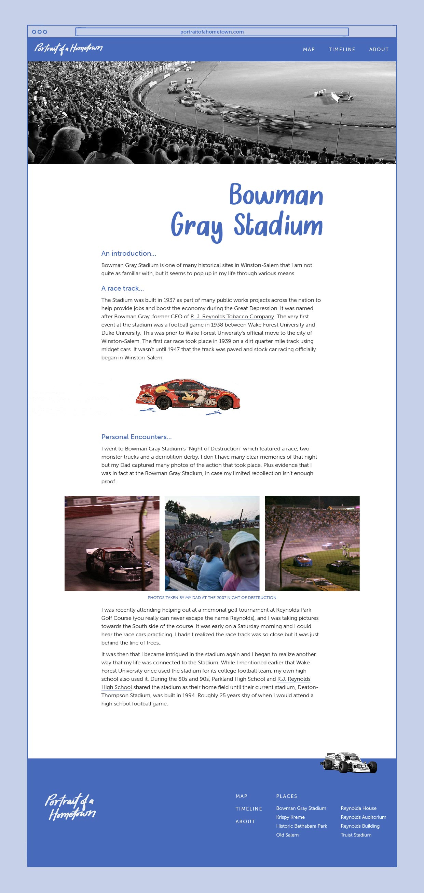
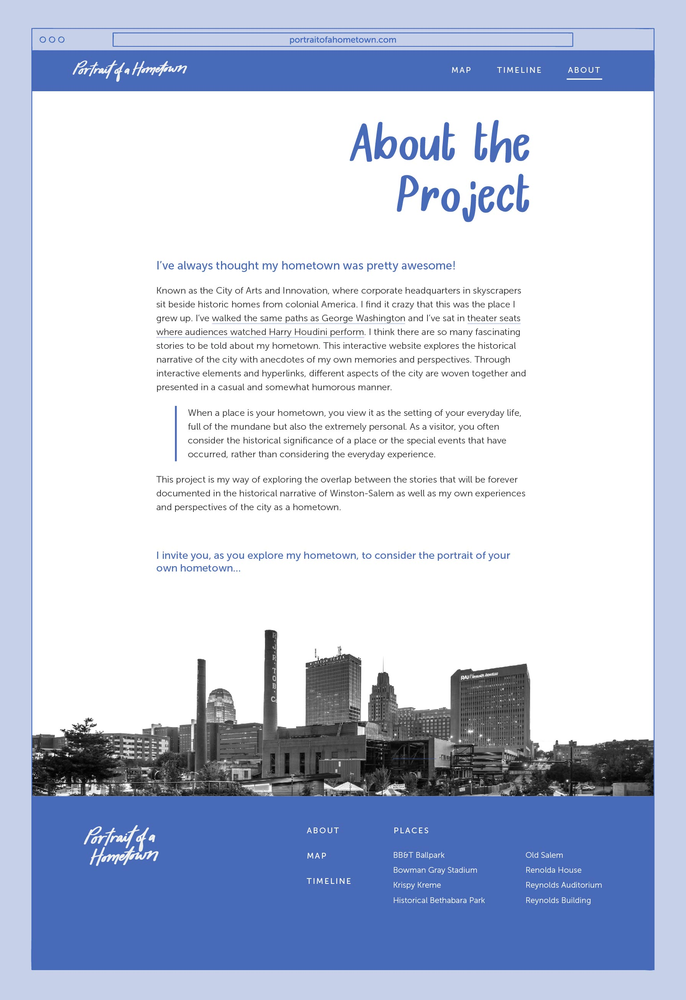
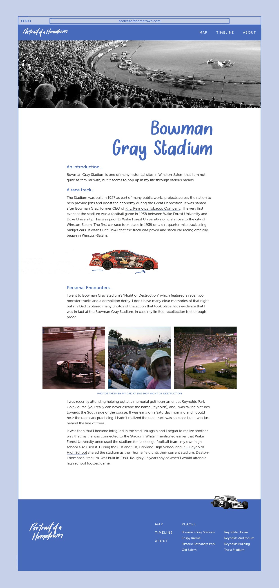

Focusing on my own hometown of Winston-Salem, North Carolina, this interactive website crafts a larger narrative, or portrait, of a hometown by combining the historical narrative of the city with anecdotes of my own memories and perspectives.

 


